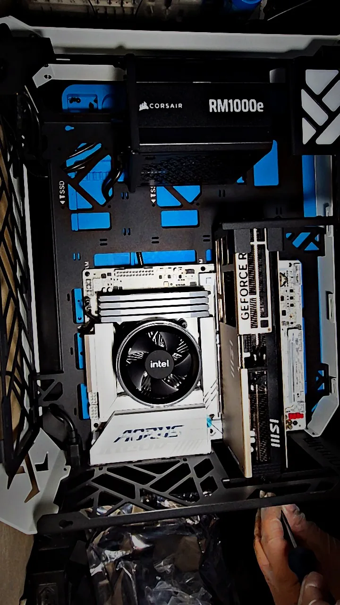
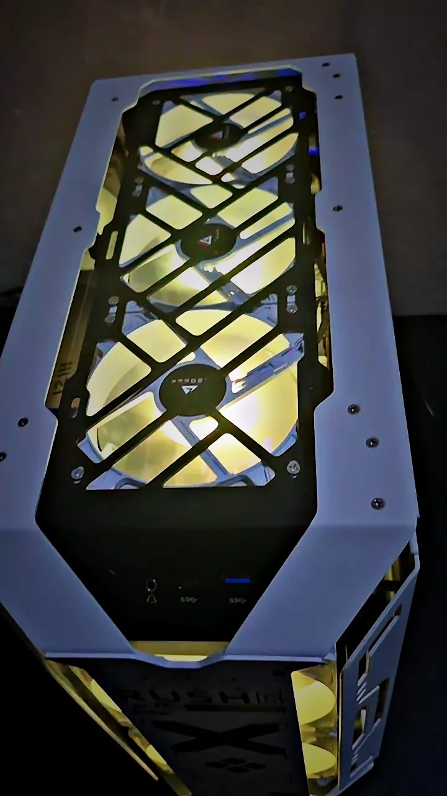
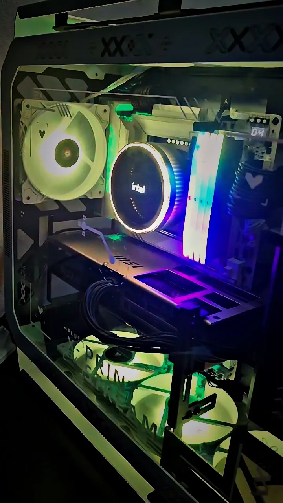

De formatações rápidas a montagens customizadas de alta complexidade. Diagnóstico preciso para computadores de uso diário e workstations de alto desempenho.



Também trabalhamos com projetos especiais, reparo de eletrônicos básicos e configuração de sistemas dedicados.
Consulte disponibilidade →